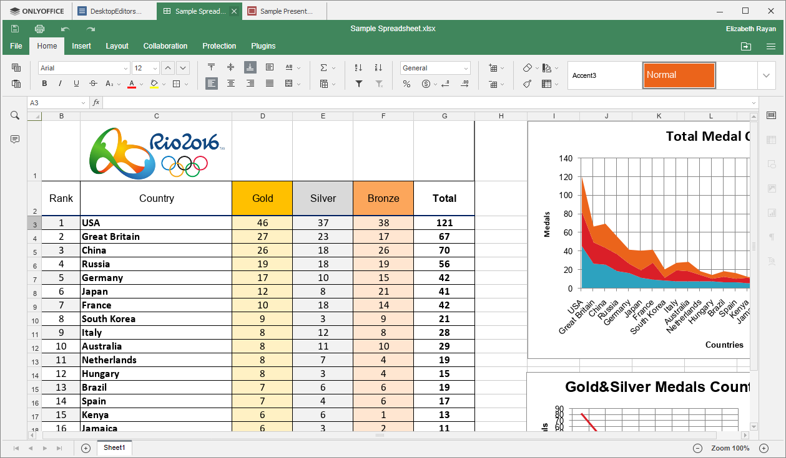
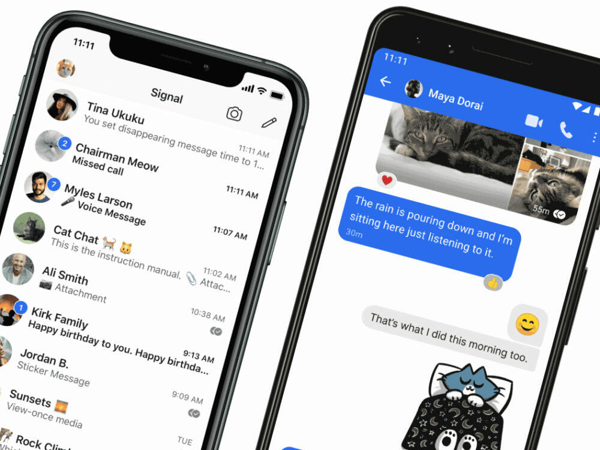

More private software alternatives
Big tech collects a lot of data about us. I am quite contious about my privacy and security. Below is a list currated by myself that tries to replace popular software with free and open source alternatives.
-
Microsoft Office
MS Office is a very good office. However it's made by Microsoft and requires special services running in the backgrount to work.
ONLYOFFICE
Free and open-source office. You can have multiple open tabs in one window.
Download
 -
Messenger
It's made by Facebook. What else do I have to say?
Signal
It's not made by Facebook. Free and open-source. Has more features.
Download
